前言 核生化緊急事件概論
核（Nuclear／Radiological）、生（Biological）、化（Chemical）三類事件的共同語法只有一句：先確認現場安全，再接觸傷患。救護技術員在這一章要學的不是「怎麼處理毒物」，而是怎麼在不變成下一個傷患的前提下，把人帶出來。
🎯 學習目標
- ☑瞭解核生化緊急事件的特點及處置原則
- ☑認識輻射源與輻射傷害
- ☑辨識毒性化學物質與中毒症候
- ☑瞭解個人防護裝備的穿脫流程
本章三節地圖
三節的節奏其實一樣：辨識 → 防護 → 分區 → 除污 → 救護 → 後送。差別只在「看不見的敵人」長什麼樣。
游離／非游離輻射、示警標誌、1 Gy≒1 Sv、熱冷區劑量率、TDS 三原則與 ALARA。
依傳染途徑給防護、10 種已知戰劑、「潛伏期落差」造成的偵測延遲。
全章最長，占五個小節：UN／GHS 辨識、A–D 級防護、C 級穿脫、ERG 與熱暖冷區、HAZMAT、除污、沖洗劑、通用流程與檢傷。
🧭 讀書會提醒：核 vs 化，兩個「第一優先」不一樣
除污其次（生命徵象穩定再說）。不可因為除污而延誤傷患內外科的急救。（課本 P.401）
除污是第一優先；但傷患情況不穩定時，應變人員還是需要給予緊急處置。（課本 P.410）
01 ① 認識輻射與辨識輻射源
分界只有一個數字：10 電子伏特（eV）。能不能把原子游離、打斷化學鍵，決定了它是「手機電波」還是「本章要談的輻射」。
起點：2011 年 3 月 11 日 福島第一核電廠
日本宮城縣東方外海發生芮氏規模 9.0 地震，緊接引發海嘯，導致福島第一核電廠一系列設備損毀、爐心熔毀、輻射釋放等災害。
因輻射源或輻射作業過程中，天然或人為等因素產生輻射意外事故，造成人員輻射曝露之安全危害或環境污染者。
意外事件
及運送等意外事件
爆炸事件
能量低，無法使物質產生游離作用。
能量高，能使物質產生游離作用。所攜帶能量大於 10 電子伏特（eV），可將原子或分子游離、打斷化學鍵，因此對人體有較為確定的傷害。
危害性放射源的現場，救護技術員需要熟悉輻射的警告標誌，採取必要的防護措施以避免危害。
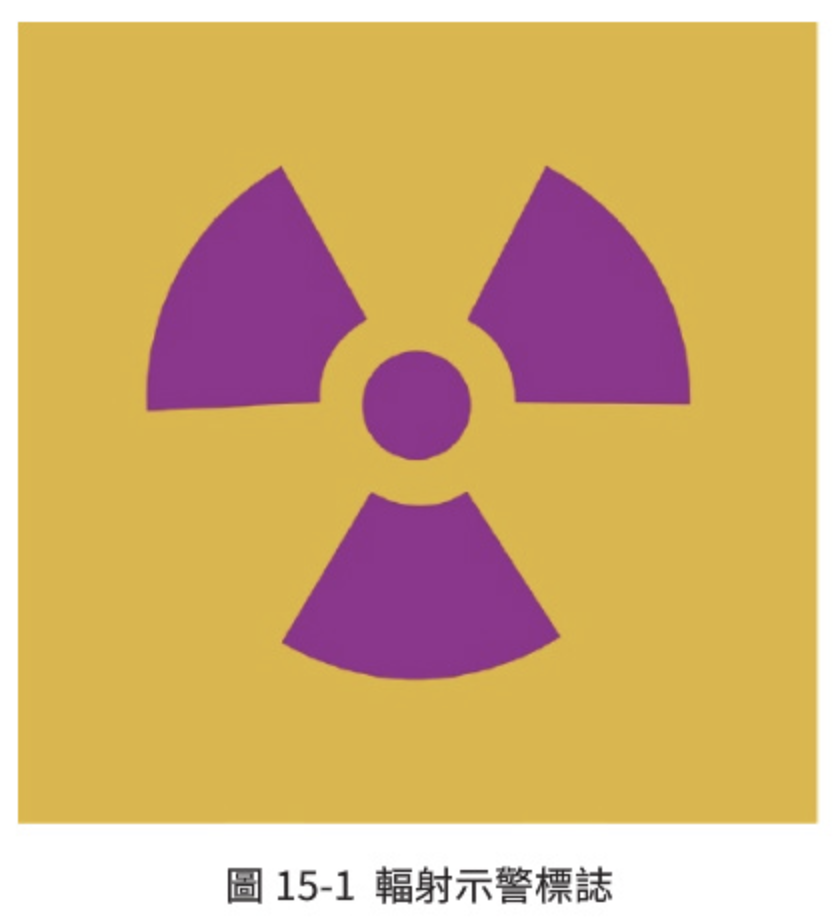
（課本 P.399 右欄上方左圖：黃底紫紅三葉片）
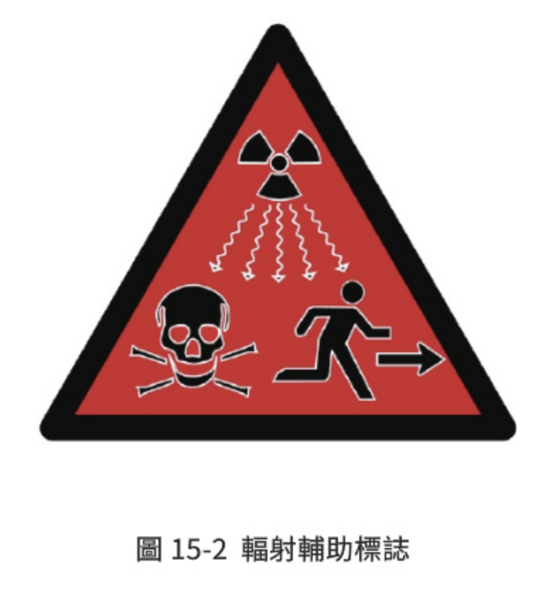
（課本 P.399 右欄上方右圖：紅色三角形，內含輻射波、骷髏頭、奔跑的人）
01 ② 輻射危害、現場管制與防護
三組數字要記牢：症狀門檻一次大面積 1 Gy（≒1 Sv）、分區門檻熱區 100 μSv/hr 與冷區 0.5 μSv/hr、防護三原則T·D·S。
當人體受到游離輻射曝露，輻射不斷累積時，會有急性與慢性的輻射傷害。依據美國國家輻射防護與測量委員會之報告：
受影響較明顯的系統
皮膚、骨髓、消化系統、血管及中樞神經系統。
皮膚
傷害類似局部燒傷，出現癢、刺痛、發紅等現象。
骨髓 ← 其他器官中最敏感
可能會出現血球數下降。
消化系統 （其次）
噁心、嘔吐、腹瀉等症狀。
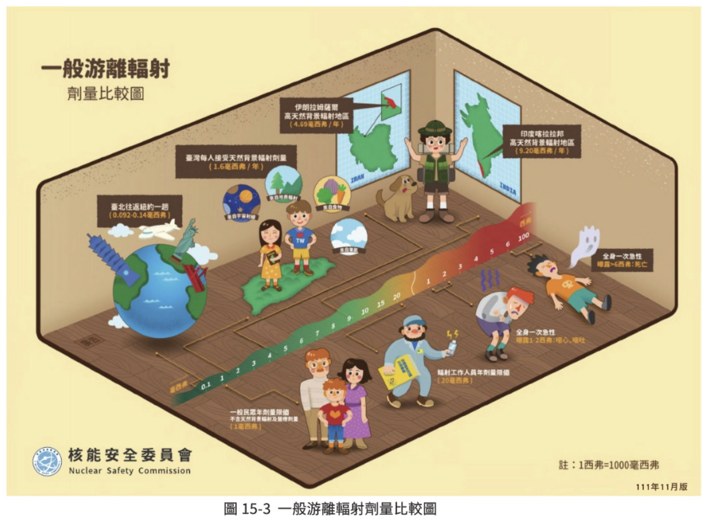
（課本 P.399 右欄下方，核能安全委員會 111 年 11 月版彩色示意圖）
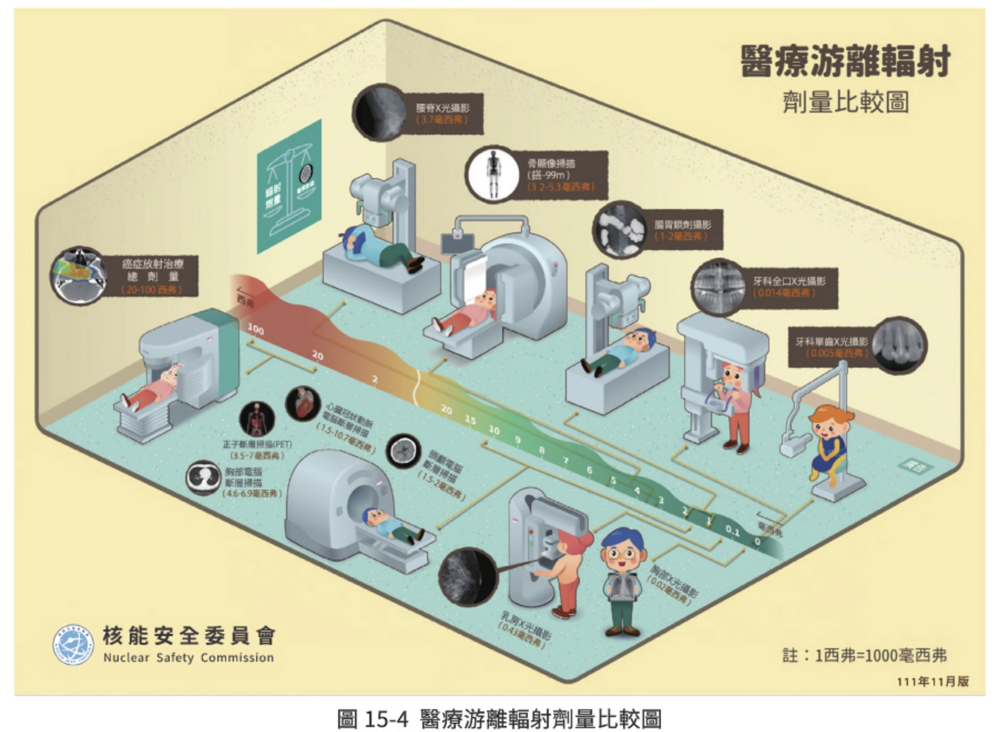
（課本 P.400 左欄上方，核能安全委員會 111 年 11 月版彩色示意圖）
左邊兩根是現場分區的劑量率（μSv/hr，已換算為 mSv 方便同軸比較），右邊五根是人員曝露的劑量上限與症狀門檻（mSv）。注意 Y 軸為對數刻度。
重點為全身覆蓋以減少皮膚曝露，以達防護低穿透性輻射（如 α 粒子、β 粒子類高能粒子流）之效果。
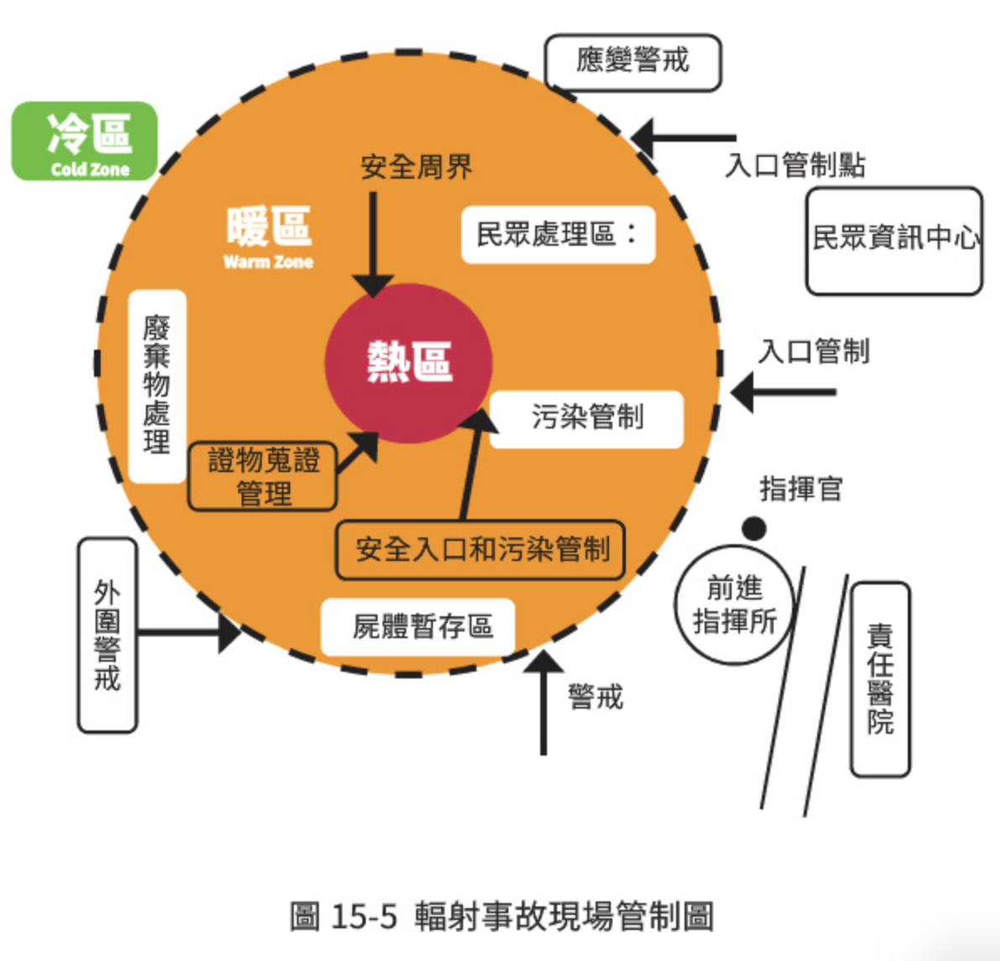
（課本 P.400 左欄下方，橘底同心圓：熱區／暖區／冷區與各管制節點）
輻射防護與輻射傷患的救護運送
防護只有三個字母：T·D·S；心法只有一個縮寫：ALARA；救護只有一句話：醫療優先，除污其次。
輻射防護三原則
TDS 三原則
作業時間越短越好。
距輻射源越遠越好。需要接觸可疑的輻射源時，用長柄工具而非徒手處理，也能有效降低曝露劑量。
As Low As Reasonably Achieve — 「指盡一切合理之努力，以維持輻射曝露在實際上遠低於法規之劑量限度」。
置入清楚標示之密封容器（如塑膠袋）以利後續量測。
可使用水及肥皂；但避免傷及皮膚（如剃除毛髮或過度猛刷）。
對救護人員、設備和設施不會有嚴重危害。
生命徵象穩定再說。不可因為除污而延誤傷患內外科的急救。
應儘速後送至最近或最快可以處理傷患其它嚴重傷情之醫院，不限於核災或輻傷急救責任醫院。
- 1以床單或毛毯覆蓋包裹並充分固定傷患。
- 2轉送途中隨時注意傷患生命徵象，並注意在管制區域內施打的靜脈輸液管路。
- 3告知後送醫院任何傷患在運送途中的病情變化；詢問醫院有無特定指示，例如需將傷患送至特定的醫院入口。
- 4後送途中持續污染管制；必要時更換手套。
- 5抵達醫院後遵照後送醫院的緊急應變程序指示行動。
02 生物病原緊急事件與生物戰劑
生物災害最難的地方不是處置，而是察覺。等到你發現的時候，往往「已經過了一段時間」。
若是已知的生物病原種類，可以依據傳染途徑給予第一線應變人員適當的防護：
- N95 或 P100 口罩
- 外科口罩
- 護目鏡
- 防水隔離衣
- 手套
目的：減少健康的應變人員被污染或是傳染的可能。
- 更換衣物
- 洗澡
- 洗手
- 75% 酒精
所謂生物戰劑，是以病原體做為武器，造成人類疾病或死亡。目前已知可被用於戰爭的病原體包括：
＊課本列舉 10 項，末尾以「等」表示未窮盡。
🔍 為什麼生物戰劑「難以察覺」，化學災害卻「容易察覺」？
課本 P.402 的核心對照——差別在發病時間有沒有間隔。
生物戰劑
- 傷患發病的時間常常會有所間隔。
- 災害大多難以察覺，往往都要到大量類似的案例產生後，才得知事件的發生。
- 而這通常已經經過一段時間。
化學物質災害
- 曝露到一定劑量後，就會產生相似的中毒症狀。
- 臨床表現可能有輕有重，但只要中毒，大部分的人都會發病。
- 因此很容易在暴露同時發生大量傷患，較容易被察覺。
甚至可能是生物戰劑導致的恐怖攻擊。
若短時間內相鄰的區域出現相同症狀的傷患。
甚至出現大量死亡的案例。
找不到合理的共同暴露源。
動物往往是最早的哨兵。
03 ① 危害辨識與現場化學防護
辨識靠兩個入口：四位數 UN 編號與GHS 圖式；防護分 A～D 四級，不確定物質時一律用最高規格。
危害物質 Hazardous material
泛指任何可能因物理、化學或生物效應，對人體健康、財產及安全上造成危害之物質。
毒性化學物質
依毒性及關注化學物質管理法之規定；目前由環境部列管公告列管約略為 488 種，以及 18 種關注化學物質。
危害性化學品 ← 本章統一用語
由於目前消防署主要有關化學物質緊急事件的應變原則為《消防機關配合執行危害性化學品災害搶救指導原則》，因此在教育訓練與溝通需要，本章通稱可能產生人體危害的化學物質為「危害性化學品」。
由聯合國危險物品運送專家委員會制定的一組 4 位數字編號，以便標註貨運容器的內容。
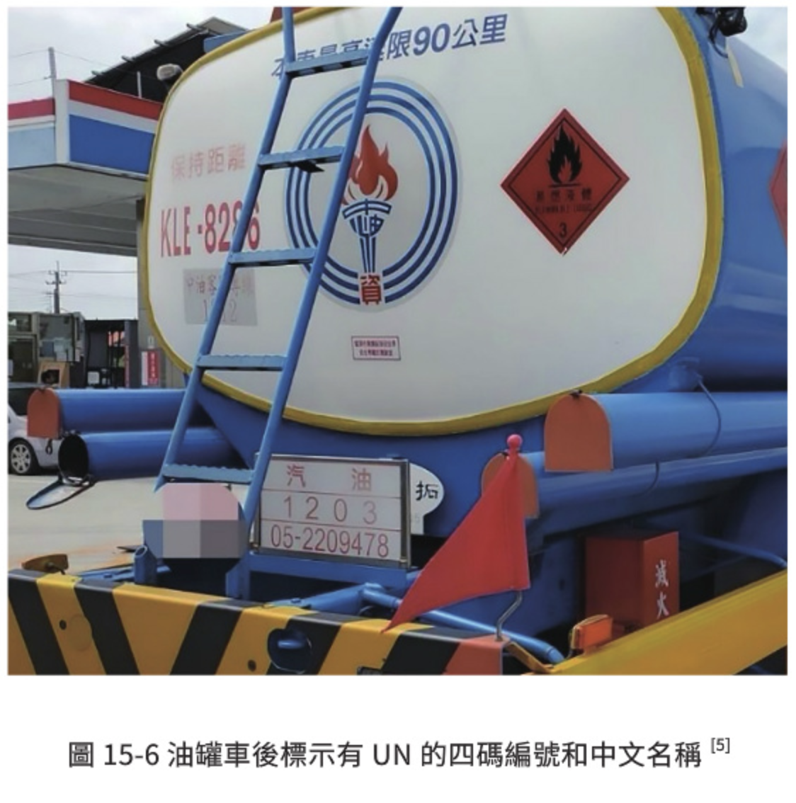
（課本 P.403 右欄，藍色油罐車車尾照片）
係聯合國為降低化學品對勞工與使用者健康危害及環境汙染，並減少跨國貿易障礙，所主導推行的化學品分類與標示全球調和系統。我國推動 GHS 也制定 CNS15030 做為參考標準。依《危害性化學品標示及通識規則》，在化學物質外部規定應張貼標準化的 GHS 圖式與標示（表 15-1）。
| GHS 圖示 | GHS 標示 | 描述 |
|---|---|---|
| 🔥 | 火焰 | 易燃氣體、易燃氣膠 易燃液體、易燃固體 自反應物質、發火性液體 發火性固體、自熱物質 禁水性物質、有機過氧化物 |
| 💥 | 炸彈爆炸 | 爆炸物 自反應物質 A 型及 B 型 有機過氧化物 A 型及 B 型 |
| 🛢️ | 氣體鋼瓶 | 加壓氣體 |
| 🫁 | 健康危害 | 呼吸道過敏物質 生殖細胞突變性物質 致癌物質 生殖毒性物質 特定標的器官系統毒性物質～單一暴露第 1 級～第 2 級 特定標的器官系統毒性物質～重複暴露 吸入性危害物質 |
| ⭕ | 圓圈上一團火焰 | 氧化性氣體 氧化性液體 氧化性固體 |
| 🧪 | 腐蝕 | 金屬腐蝕物 腐蝕／刺激皮膚物質第 1 級 嚴重損傷／刺激眼睛物質第 1 級 |
| ☠️ | 骷髏與兩根交叉骨 | 急毒性物質第 1 級～第 3 級 |
| 🐟 | 環境 | 水環境之危害物質 |
| ❗ | 驚嘆號 | 急毒性物質第 4 級 腐蝕／刺激皮膚物質第 2 級 嚴重損傷／刺激眼睛物質第 2 級 皮膚過敏物質 特定標的器官系統毒性物質～單一暴露第 3 級 |
＊「GHS 圖示」欄位以 emoji 示意，實際圖式為紅框白底菱形，請對照課本 P.404 表 15-1 或現場實物標示。
現場化學防護：A～D 四級
美國環保署依對皮膚黏膜與呼吸道保護能力綜合考量分為四級，也是臺灣通用的分級方式（表 15-2）。
實務上的關鍵但書
如何選擇化學個人防護裝備，可參照表 15-2；但因多數情形下，第一線應變人員無法馬上知道為何種危害性化學品，因此在實務上可能不甚適用——必須都以最高規格防護為首要選擇。
A 級防護衣
| 美規分級 | 曝露情況 | 防護裝備 |
|---|---|---|
| A |
|
對皮膚、眼睛及呼吸系統需要最好防護
|
| B |
|
對呼吸系統需要最好防護，對皮膚則次之
|
| C |
|
對呼吸系統次一等級，對皮膚次一等級
|
| D |
|
|
03 ② C 級防護衣穿著與脫除流程
穿是由下而上、由內而外；脫是由上而下、由內向外捲繞。脫除比穿著更危險——污染就在你手上。
每格右側預留課本步驟照片插槽；檔名見格內。也可只放一張整版流程圖 fig15-7.png 取代八張小圖。
穿著工作服及防護連身衣
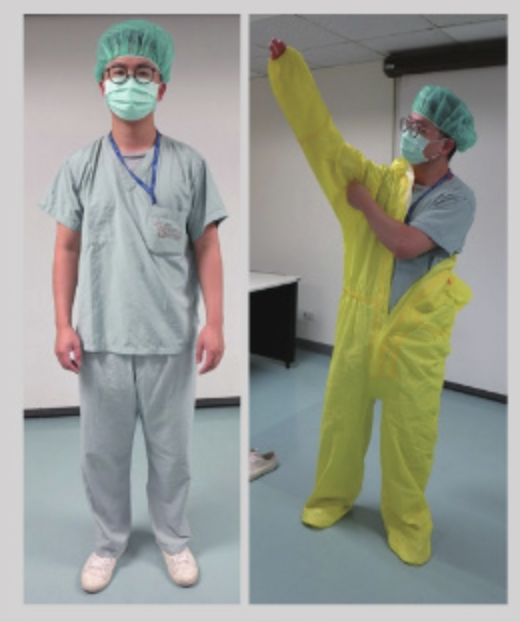
穿著抗化靴
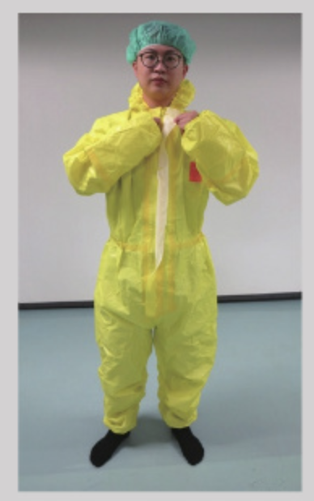
戴上防護衣頭套
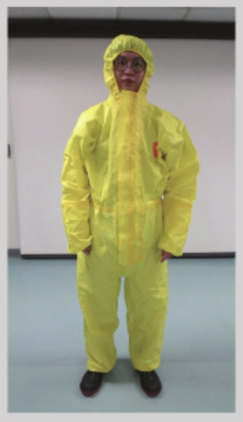
在防護衣、防護靴接縫處，封上抗化膠帶
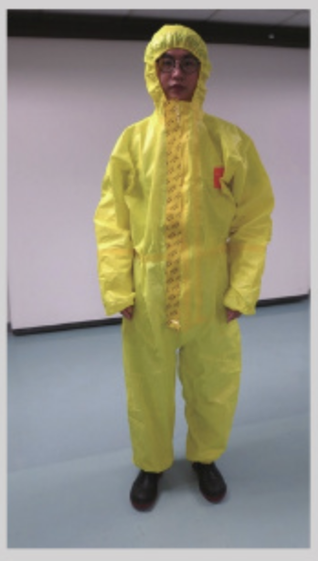
戴上防護頭罩並黏合固定
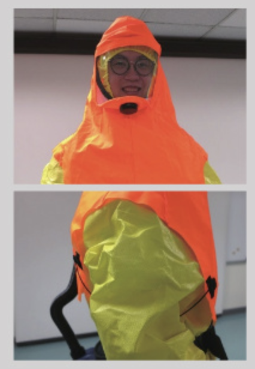
戴內層抗化手套於袖套內層、外層橡膠手套於袖套外層，然後封上抗化膠帶
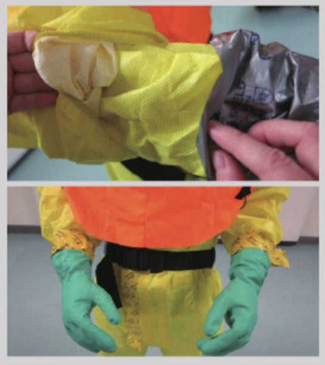
穿戴空氣幫浦接上送風管，並確認開機及電力充足
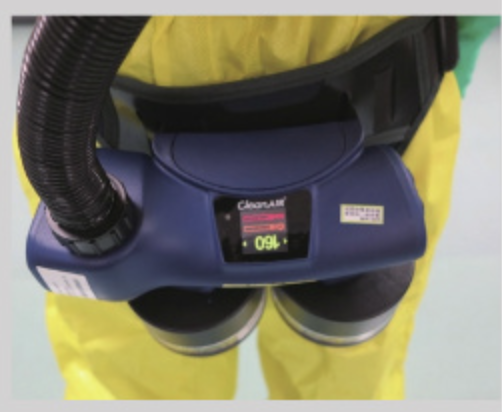
裝上防毒罐，背後寫姓名，再次確認防護衣穿著完成
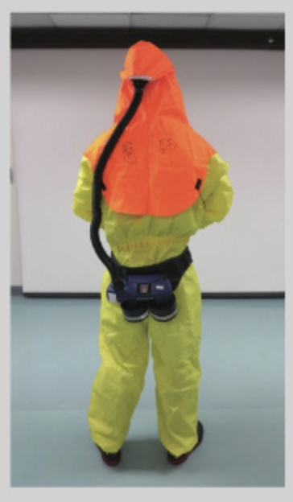
整版流程圖替代檔名：fig15-8.png
解開送風管，移除送氣幫浦
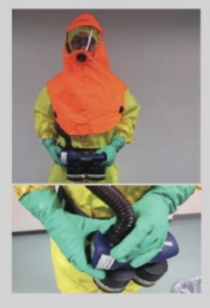
解開防護頭罩固定
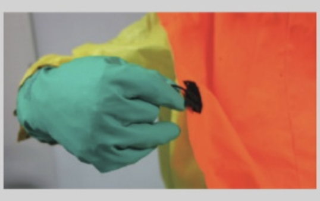
身體前傾，移除防護頭罩
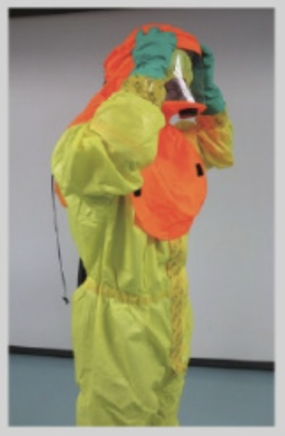
撕開抗化膠帶，脫除外層橡膠手套
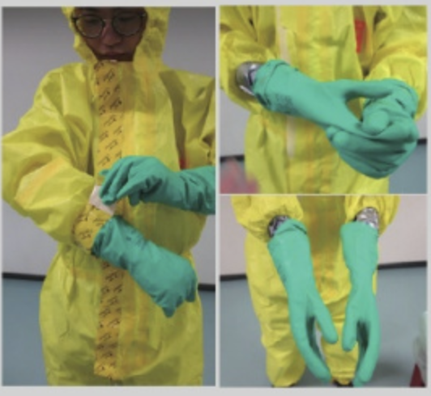
解開防護衣拉鍊，移除防護衣頭套
脫除防護衣，由上而下、由內向外捲繞
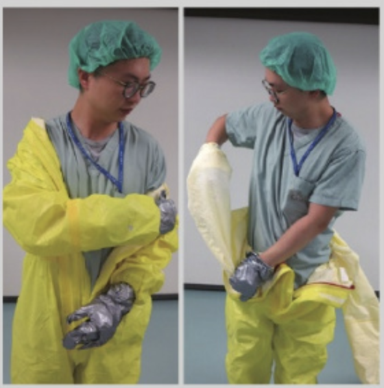
靠乾淨區腳先脫除抗化靴，並移出污染區
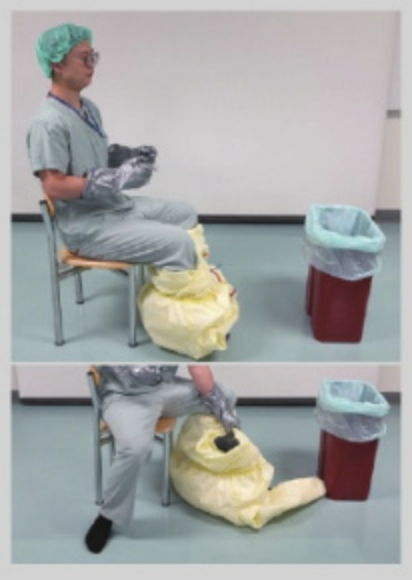
脫除內層抗化手套後洗手、沖洗身體、更換工作服
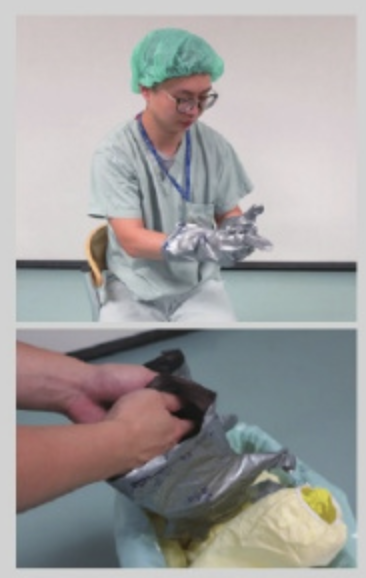
實務現場可能沒有抽、送風幫浦，可視現場狀況或依緊急應變指南或物質安全資料表（SDS）選擇適當呼吸防護具。濾毒罐也應選取適切對應化學品的型號。
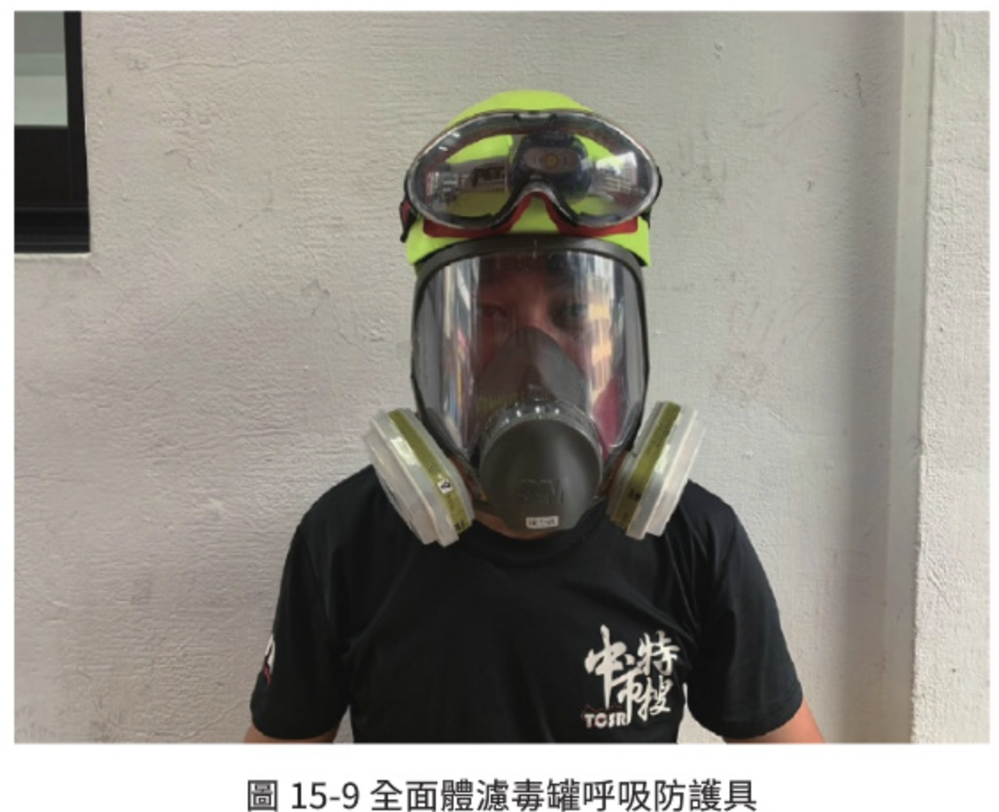
（課本 P.407 右下左圖，人像配戴全罩面具照片）
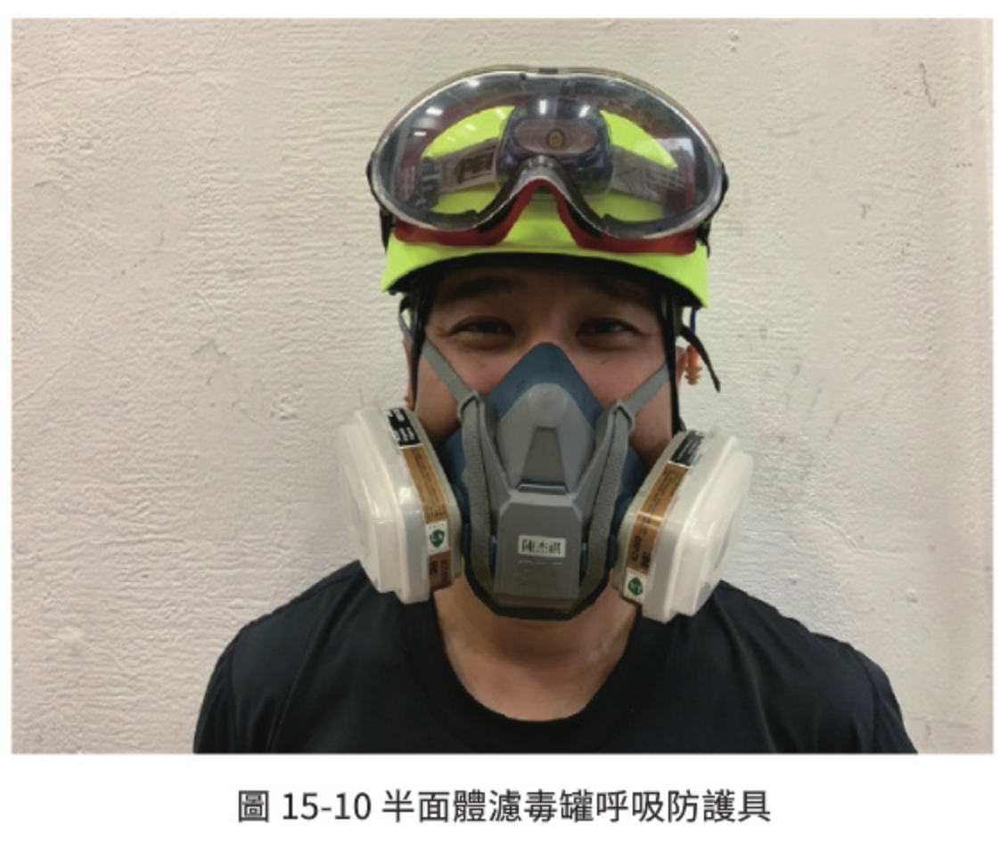
（課本 P.407 右下右圖，人像配戴半罩面具＋護目鏡照片）
03 ③ 化災現場應變：ERG、管制區域與 HAZMAT
ERG 是一本五色插頁；管制區域是依風向與地勢畫出的三個圈；HAZMAT 是六個步驟。指揮站永遠在上風、上坡、上游。
🚨 抵達化災現場「之前」
應注意環境中是否有洩漏物、蒸氣、薰煙和煙霧等可能危害物，避免貿然進入危害性化學品可能影響之範圍，並自上風處觀察現場。同時利用緊急應變指南，查詢適用於此類化學物質的處理原則。
國內許多工廠及消防單位都備有緊急應變指南（ERG），功能在於提供應變初期階段，於到達事故現場時，對危害物質提供最初步的應變指導，作為第一線應變人員（含消防人員、救災救護人員）參考。
若化學物質在查詢頁面發現該物質標示有填底色，代表該物質為吸入毒性危害物質（Toxic Inhalation Hazard, TIH），這時候熱區隔離距離需參照綠色頁面。
因危害性化學品所產生之氣體或揮發物可能隨著空氣散播到遠處，液體可能順著低窪地勢而流動，因此在區域劃定時，應以風向及地勢因素作考量——如指揮站應設立於上風、上坡及上游（圖 15-11）。
危害性化學品之污染區域。安全管制距離隨化學物質種類、洩漏及火災狀況不同而有差異。
若未穿著完整防護者，均應視為受到汙染，給予除污。
- 包含出入口管制點及入口通道（又稱除污走廊）。
- 主要作用是提供除污設備架設與操作。
- 仍須注意是否有火災爆炸破片及有害氣體擴散之威脅。
- 從熱區出來之傷患、救災人員皆應在此接受完整的除污，同時給予必要、可行的急救處置，待除污後再移至冷區。
- 基本上就是熱區、暖區以外的區域。
- 指揮官、安管人員、救護人員及其他支援、備勤人員通常在鄰近暖區處集結救災、救護器耗材。
- 救護工作一般在暖區中僅做必要的急救處置，其餘救護處置都在冷區進行。
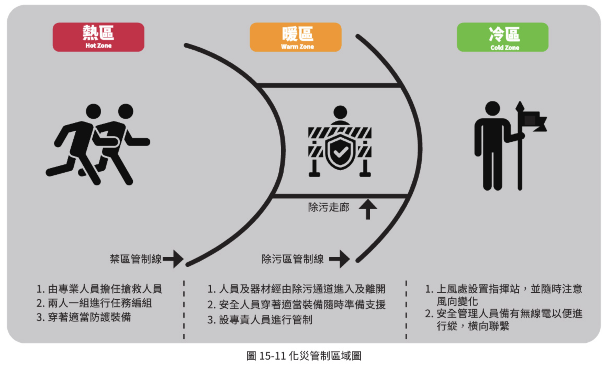
（課本 P.409 右頁上方，熱區／暖區／冷區三色橫向示意，含禁區管制線、除污區管制線、除污走廊）
- 由專業人員擔任搶救人員
- 兩人一組進行任務編組
- 穿著適當防護裝備
- 人員及器材經由除污通道進入及離開
- 安全人員穿著適當裝備隨時準備支援
- 設專責人員進行管制
- 上風處設置指揮站，並隨時注意風向變化
- 安全管理人員備有無線電以便進行縱、橫向聯繫
化災應變的原則 HAZMAT
六個字母、六個步驟。最該背的一句：處理「對」比處理「快」重要。
H — 危害辨識
03 ④ 毒化物傷患處置與沖洗劑
四件事：除污 → 救命術 → 解毒劑 → 後送；第一步只是把衣服脫掉。沖洗劑記兩個名字：敵腐靈與六氟靈。
（一）除污是第一優先
化災事件的傷患，除污是第一優先。最簡單的除污就是將傷患身上的衣物脫除，這樣就可以減少 70%～90% 以上化學物質附著量。接下來配合實際可用的資源，進一步採取緊急除污、概略除污與技術除污等作為。
1. 緊急除污
化災事件的傷患，除污通常是第一優先的處置；但如果傷患情況不穩定，應變人員還是需要給予緊急處置。
大概就涵蓋了這個階段大部分可能進行的救護處置。
必須仰賴好的支持性療法，以挽救傷患生命。
少數化學物質，業主在運作場所可能會準備有解毒劑：
確認事故現場鄰近有哪些具化災處理能力之醫院，通知其化災事件的發生以及傷患後送，請醫院儘早開始進行相關準備。
若傷患未經完整除污，可以用拋棄式包巾包覆傷病患全身，避免車內污染。
醫院於傷患到院後重新評估，是否需要再次除污，避免院內污染。
救護車使用後，必須經過清潔，才能再次使用。
敵腐靈® 與六氟靈®
敵腐靈＝一般酸鹼腐蝕／不明化學物質；六氟靈＝含氫氟酸。兩者都是沖洗，不是中和。
📌 法規與配置現況（課本 P.411）
敵腐靈® 與六氟靈® 在民國 111 年 4 月份取得臺灣衛生福利部食品藥物管理署第二級醫療器材許可證後，目前可視傷患需要，於到院前給予。至今已有八個縣市消防局在救護車配置敵腐靈® 及六氟靈®，同時在全國各縣市的化學災害處理車也都常備。
- 1當傷患接觸酸鹼腐蝕性物質及其他不明化學物質時使用。
- 2優先使用敵腐靈®；如果沒有則以生理食鹽水沖洗眼部及皮膚患部。
- 3雖然救護車接手處理傷患可能是 20–30 分鐘後，仍然可以使用敵腐靈®／六氟靈® 溶液持續處理皮膚患部 10–15 分鐘——除可立即降低疼痛感，亦能減輕燒傷的嚴重度及日後住院的醫療費用。
- 4適用於受傷後 24 小時內能 pH 值異常的任何化學性皮膚損傷和 pH 值異常的化學性眼損傷；可以紗布浸泡敵腐靈® 12～24 小時。
- 1針對傷患遭遇含氫氟酸物質污染時優先使用。
- 2急救人員須穿著能抵擋氫氟酸的個人防護，尤其是戴上能預防氫氟酸吸入的呼吸防護具。
- 3同時須評估傷患疼痛指數是否有明顯下降，並盡速取得葡萄糖酸鈣軟膏；在穿戴好拋棄式手套後，對患部皮膚持續按摩至少 15 分鐘。
⚠ 但是並不能對眼睛患部直接塗抹葡萄糖酸鈣軟膏。
03 ⑤ 通用流程、檢傷分級與參考資料
整章收束成一張流程圖，起點永遠是同一個問句：現場是否安全？
是否安全？（註 1）（註 2）
緊急救護流程
檢傷分類是到院前救護必要的步驟。目前也持續推動「臺灣到院前應採用與急診檢傷一致的分類方式」；又因核生化緊急事件複雜、傷害性可能強大，故對於檢傷分類有其特殊性，以下提供到院前檢傷分類分級圖表供到院前參考（表 15-3、15-4）。
| 判定依據中文名稱 | 到院前級數 | 次要調節變數 |
|---|---|---|
| 重度呼吸窘迫（<90%） | 1 | |
| 休克 | 1 | |
| 無意識（GCS 3-8） | 1 | |
| 中度呼吸窘迫（<92%） | 2 | |
| 血行動力循環不足 | 2 | |
| 意識程度改變（GCS 9-13） | 2 | |
| 輕度呼吸窘迫（92-94%） | 3 | |
| 血壓或心跳有異於傷患之平常數值，但血行動力穩定 | 3 | |
| 毒氣或其他氣體吸入，無呼吸窘迫徵象 | 3 | ＊ |
| 遠距離或非急性暴露（>7 天），生命徵象正常，無發燒，無疼痛不適 | 4 | ＊ |
疑似或確定化學、輻射或危害物質暴露
| 判定依據中文名稱 | 到院前級數 | 次要調節變數 |
|---|---|---|
| 重度呼吸窘迫（<90%） | 1 | |
| 休克 | 1 | |
| 無意識（GCS 3-8） | 1 | |
| 嚴重燒傷 >25% 體表面積 | 1 | ＊ |
| 中度呼吸窘迫（<92%） | 2 | |
| 血行動力循環不足 | 2 | |
| 意識程度改變（GCS 9-13） | 2 | |
| 手部／足部／鼠蹊部／顏面部灼傷 | 2 | ＊ |
| 化學物質濺入眼睛，造成傷害 | 2 | ＊ |
- 福島第一核電廠事故。民國 110 年 2 月 19 日，下載自 https://zh.wikipedia.org/wiki/福島第一核電廠事故
- 行政院核能安全委員會：輻射災害定義。民國 110 年 2 月 19 日，下載自 http://www.nusc.gov.tw/ 緊急應變 --5.html
- 行政院核能安全委員會：原子能知識。民國 110 年 2 月 19 日，下載自 https://www.nusc.gov.tw/category/ 便民專區 / 原子能知識 /220_271.html
- 行政院核能安全委員會：輻射災害第一線應變人員手冊。民國 110 年 2 月 19 日，下載自 https://www.nusc.gov.tw/ 緊急應變 / 我該怎麼做 / 輻射災害第一線應變人員專區 --5_41_4428.html
- 廖訓禎主編：中級救護技術員訓練教科書。內政部消防署民國 110 年 9 月。
- 工業技術研究院，2020 年版緊急應變指南：民國 110 年 6 月。
- 聯合國危險貨物編號。民國 110 年 2 月 19 日，下載自 https://zh.wikipedia.org/wiki/ 聯合國危險貨物編號 環境部化學物質管理署，毒性化學物質危害標示 - 象徵符號說明，下載自 https://www.tcsb.gov.tw/lp-271-1.html
- 環境部化學物質管理署，毒性化學物質危害標示 - 象徵符號說明，下載自 https://www.tcsb.gov.tw/lp-271-1.html
- 石富元；江文莒主編：災難醫學。台灣急診醫學會。民國 112 年 2 月 1 日。
- 消防機關配合執行危害性化學品災害搶救指導原則：民國 107 年 8 月 7 日，內授消字第 1070823310 號。
- Hall A.H. et al, Diphoterine® for Emergent Eye/Skin Chemical Splash Decontamination solution for chemical splash injuries, Cutaneous and Ocular Toxicology. 2009, 28(4), 149-15
- Kulkarni P. et al, The effects of the use of Diphoterine® solution on chemical burns in the Tarapur industrial complex, India, Burns Open. 2018, 104-107.